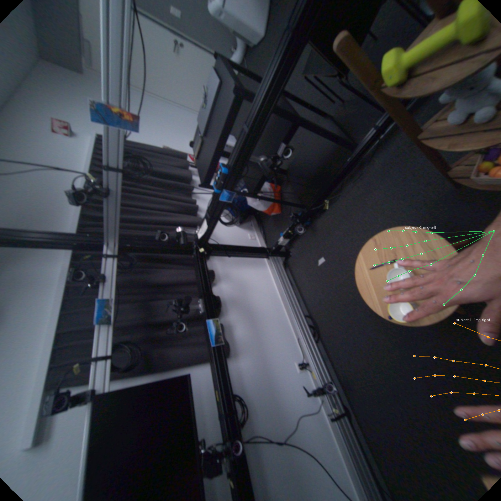

FoundationPose / DexYCB
complete完整 S0 test export 已落到静态页面，适合做 object pose 基线对照。
Translation1.85 cm
Rotation41.15 deg
ADD3.33 cm
Coverage704 / 704 clips
重点不是只看最终数字，而是把 metrics table / image / video 全都做成可复用的 public surface，组会、周报、后续论文整理都能直接复用。
FoundationPose 作为 object-only 参考面已经稳定；MagicHOI HO3D 变成了 live site，可边跑边看中间结果，不再等离线汇总。
会前版本把代表性 metrics / image / video 直接内嵌到本页，避免公开站点再依赖大体积 baseline 子站点。
完整 S0 test export 已落到静态页面，适合做 object pose 基线对照。
HO3D sub_test object 指标已形成完整公开页，适合和后续 HOI 分支做对象侧 sanity check。
重点是把 long-running baseline 变成“边跑边能看”的网页面，而不是等一个最终 csv。


现阶段的数字主要用来筛路线，不拿来做最终 claim。核心信息是：从 S1-A 到 S2-D，loss 下降连续；S2-D 在可用证据上是当前 winner。
S2-D（hand-ROI + confidence scene tokens）相对 full-frame scene token 更稳；但 visible/occluded/world 的 slice-grade 证据还不够，Stage-3 不能直接 claim-grade 往前跳。
关键任务是把 crop-camera 的手结果稳定 lift 到 full-image/world，而不是一开始就做复杂融合。

scene 信息开始帮助 hand，但当前还是 route-selection 证据，不是 claim-grade 指标。

为后续 Stage-3 object token / render token 路线准备视觉接口。

因为底层输入契约已经足够稳。近两周 HCU 这条线的价值，不是又多了一个网页，而是把“多数据集输入是否一致”这件事收成了可公开核验的证据。
round_25 final acceptance pass，6 个数据集的 published overlay derivation 全部通过，geometry diff nonzero pixels = 0。
这里保留最关键的 original / unified / diff 三张图，保证这一页单独发布时也能独立讲清楚输入契约稳定性。


`project_tracking` 首页、public mirror、baseline 页面的基本骨架全部搭起来。
开始把多数据集 canonical MANO 接口变成可公开核验的 round report。
`round_25` 成为 closure-valid 证据链，geometry / binding / quant 全部通过。
补上原始仓库 overlay gallery 和量化 summary，方便解释接口一致性。
MagicHOI HO3D 进入 live site 阶段；今天这页汇报 deck 也接进了同一套发布面。